今田 悠(いまだ ゆう)
過度なかまってちゃん気質の青年。そこそこ何でもできるが自己肯定感は低い。
宮崎とは友達だが、時々危険な目にあわされる。
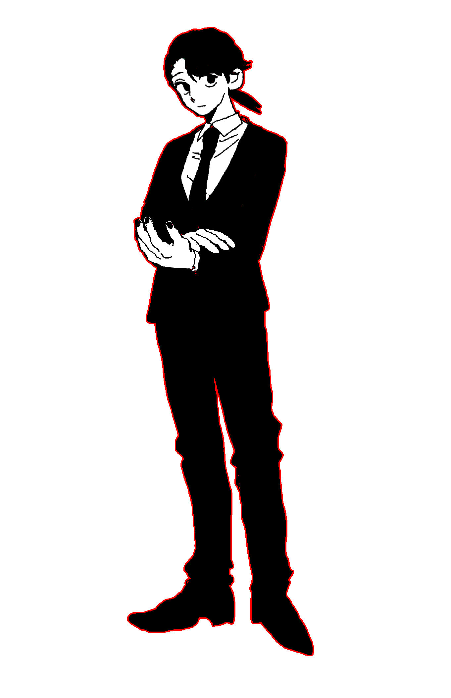
マサヒト
誠実で素直で心優しい青年。とても気が弱く、感情のコントロールが苦手。
子供の頃に家族が心中したトラウマに度々苦しめられている。
愛してた家族に会おうと危なっかしい行為に及ぶのであまり1人にしないほうがいい
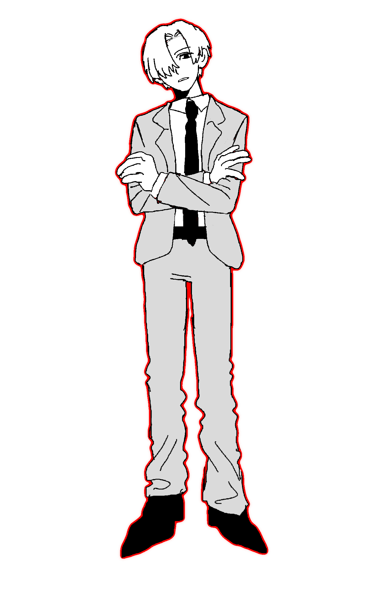
ミナト
気が強く頑固でプライドの塊。自分が一番正しいと考えている。
関わりずらい雰囲気だけれど根は優しい。困ってるときは助けてくれる。
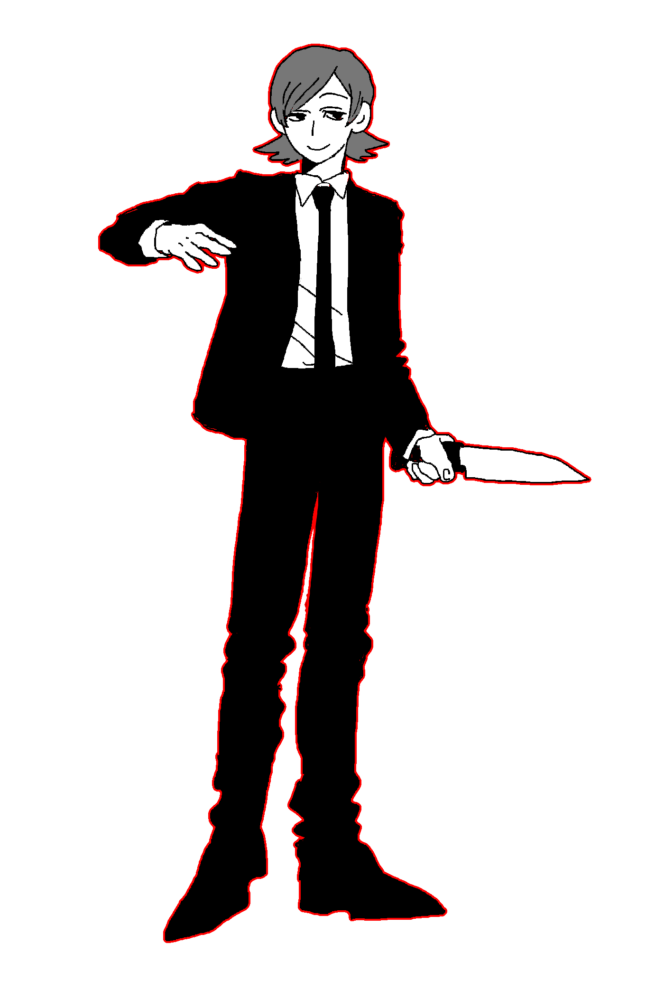
カズ
限りなく人に近い形をしたナニカ。
倫理観と道徳がなくて幼稚。殺人と食人が趣味。
ミナトに対して異様な執着心があり、片想いしている
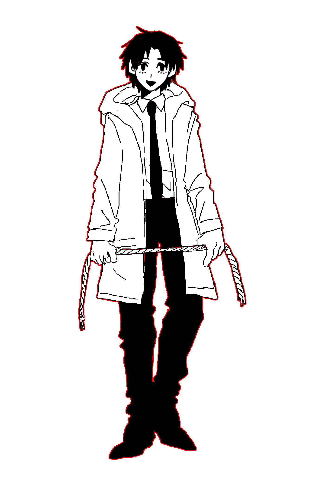
宮崎 東
人畜無害な顔をした異常者。
夜な夜な外に出て人間を誘拐し殺害してその死体をバラバラにするのを楽しんでいる。
死体で遊んで解体する過程を収めたビデオを撮るのがすき。
今田 悠(いまだ ゆう)
過度なかまってちゃん気質の青年。そこそこ何でもできるが自己肯定感は低い。
宮崎とは友達だが、時々危険な目にあわされる。
.png)
宮本(14)
親にも嫌われていて友達もいない孤独な少年。
親からの暴力でよく傷をつくっている。無口で無表情。
弱い生き物を殺し中身を観察するのが趣味。シノダが唯一の友達
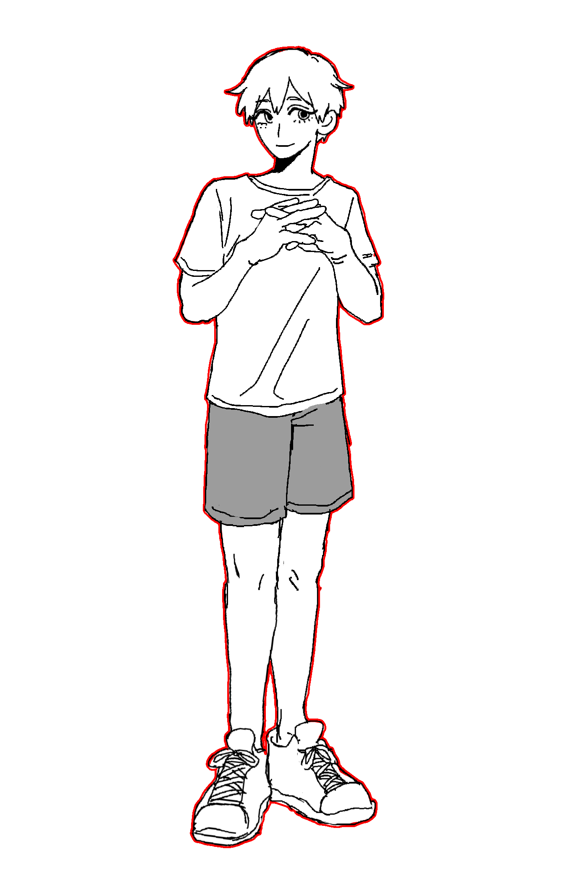
シノダ(14)
宮本の友達。宮本が大好きで自分が一番彼のことを理解していると思っている。
宮本とは正反対でまともに見えるが結構おかしい。
宮本に一度殺された
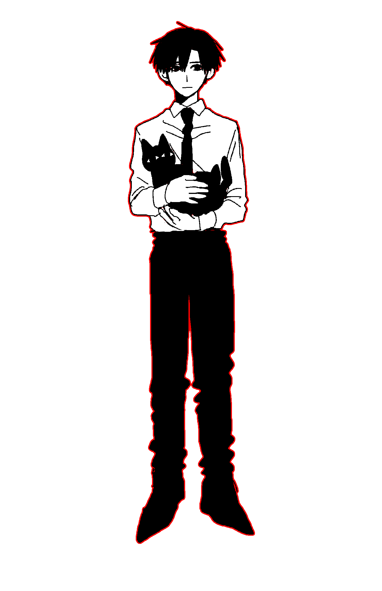
（飼い主）
凡庸な男。情緒が不安定で自暴自棄になることが多い。黒猫を飼っている。
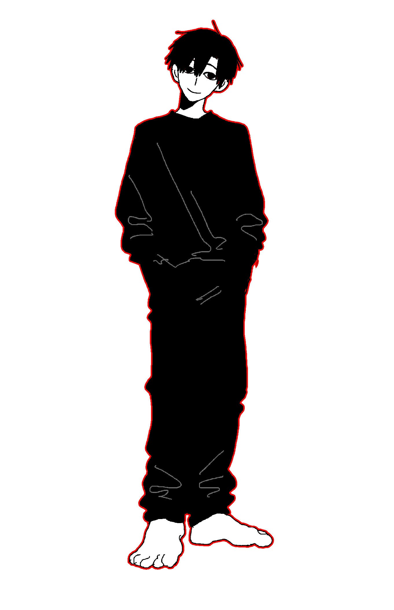
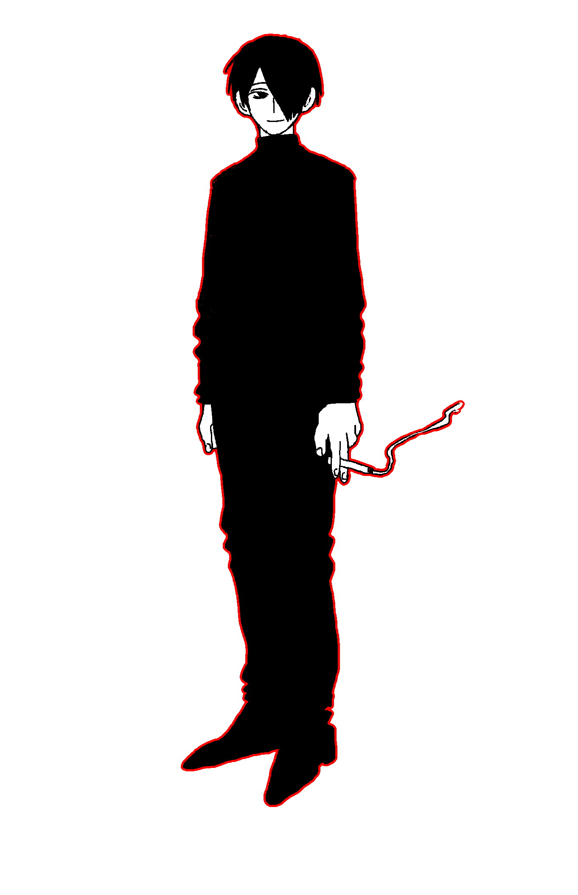
水野
物静かで素性があまりわからない不思議な男。
加虐趣味があり同居人の日野を自身の欲を満たすために使っている
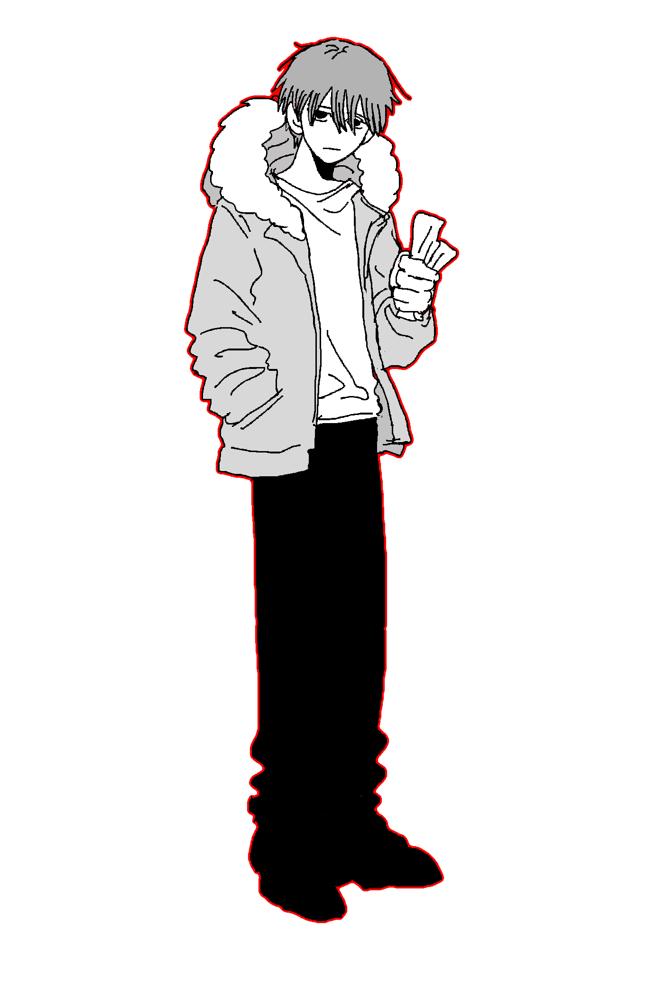
日野
水野のヒモ。
家出して路上生活してるところを水野に拾われた。
水野に虐められるのが嫌だが追い出されたら生きていけないので仕方なく受け入れている

人間を犬扱いして飼っている人。昔飼っていた犬が散歩中の事故で死んだショックで狂った。
人間を大きな犬だと思い込んでいる。
死んだ愛犬をずっと待っている
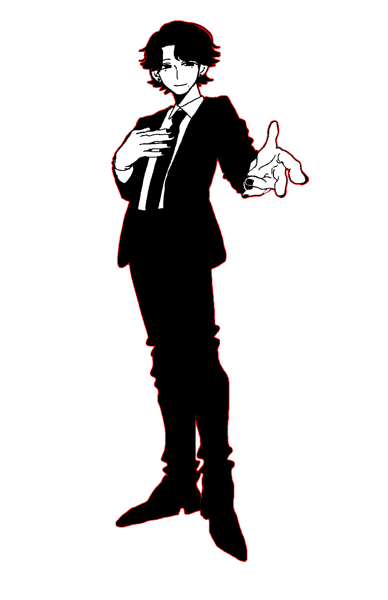
日々のストレスを苦に崖から投身自殺した男性の幽霊。生前は明るく活発だった。
自分が死んだことに気付かず、飛び降りたあの日からずっと死ぬ瞬間を繰り返している。
崖に来た自殺志願者を唆して一緒に飛び降りる。
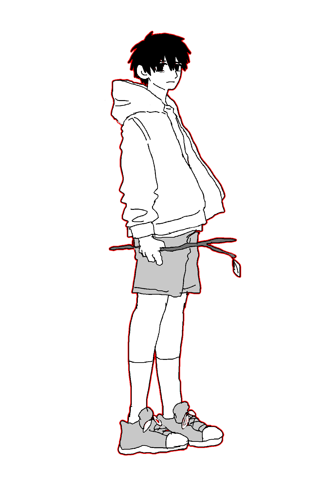
自殺念慮に苛まれ死を決断した青年。
自殺の名所の崖に行った際に幽霊の男性に出会って一緒に飛び降りた。